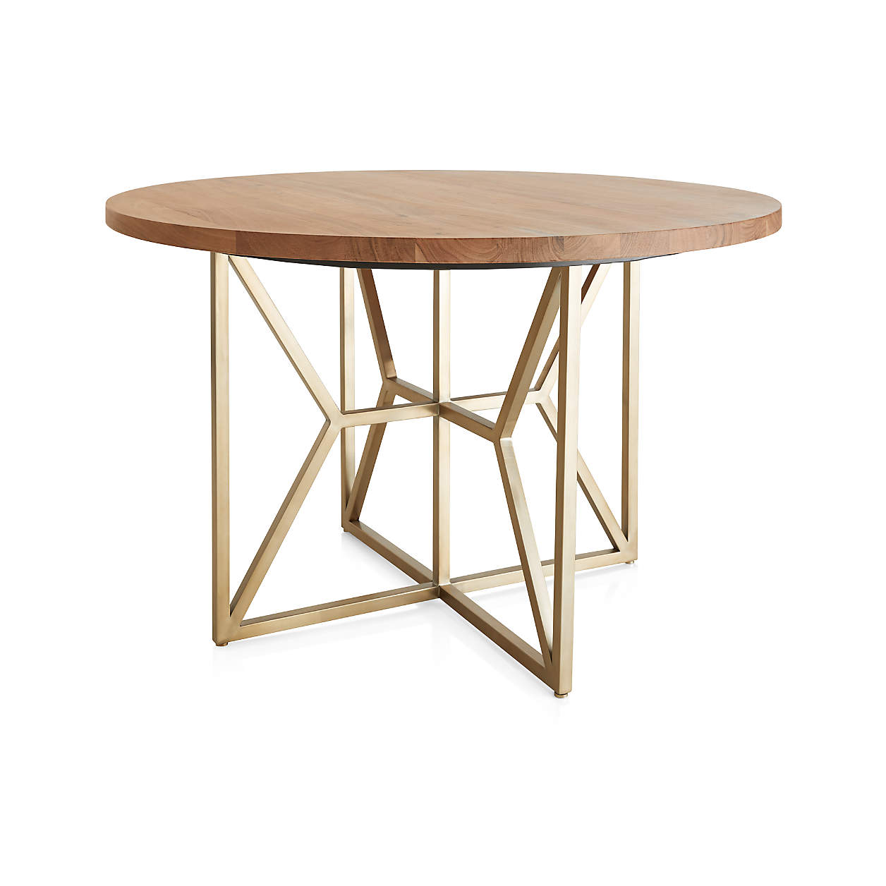
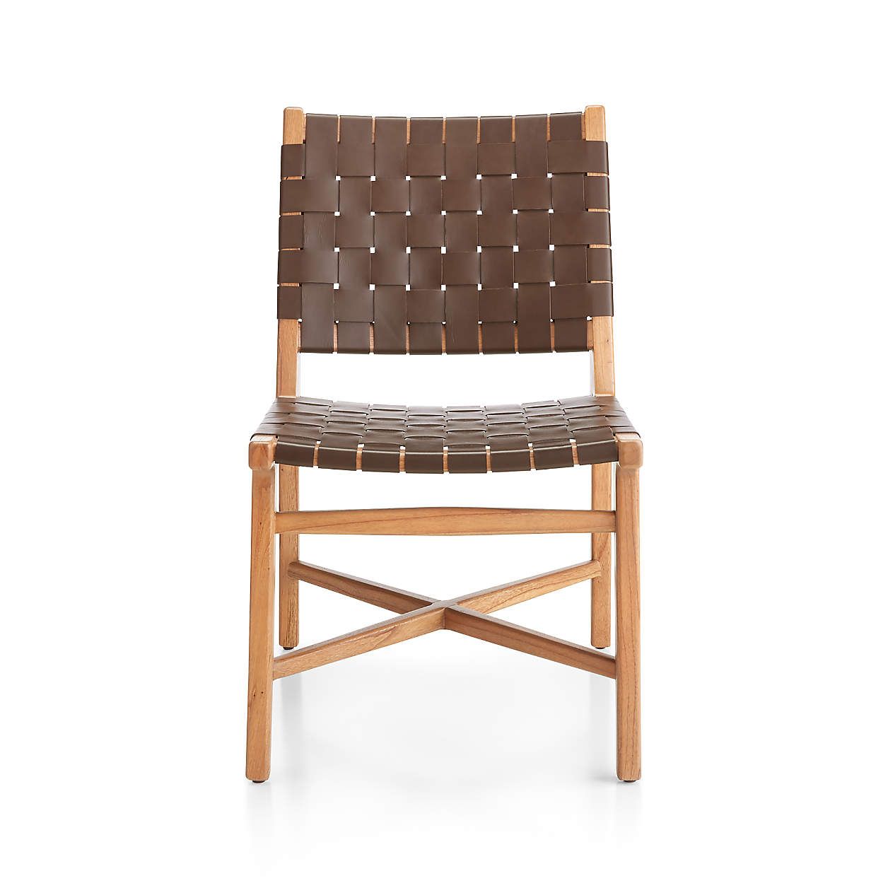
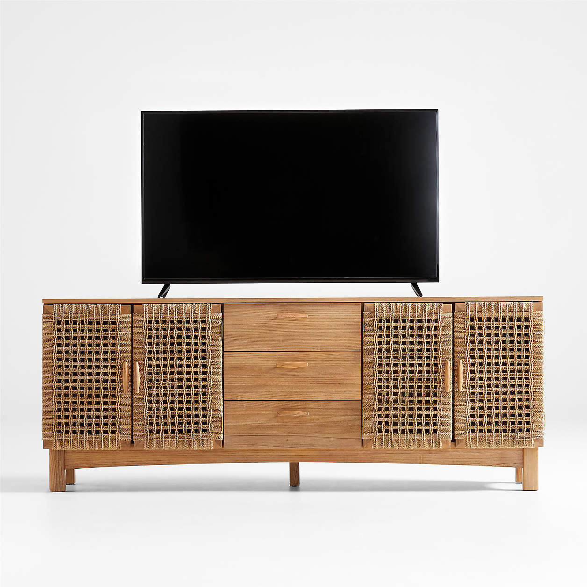
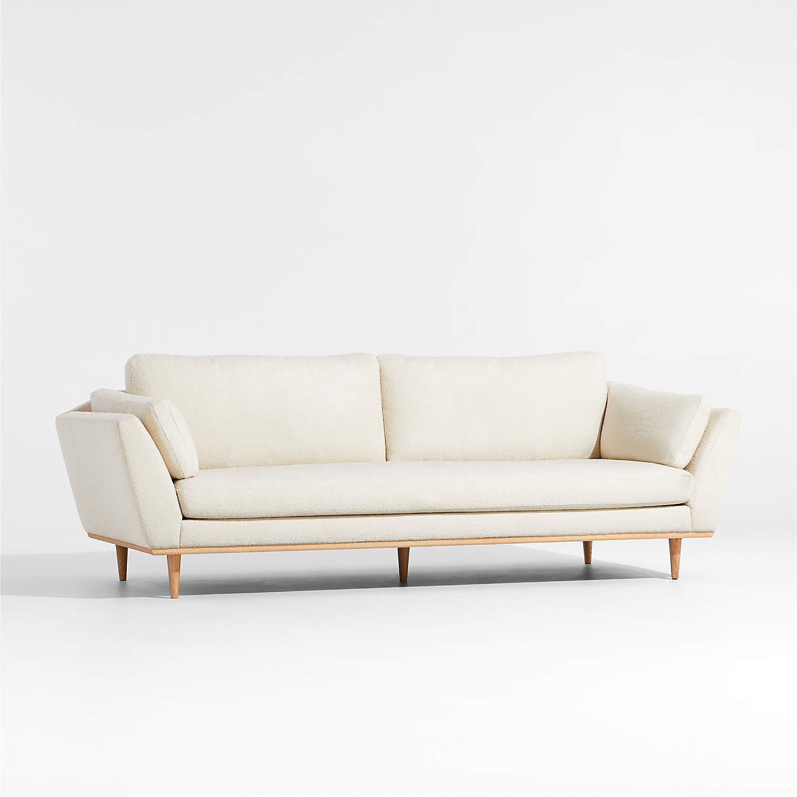
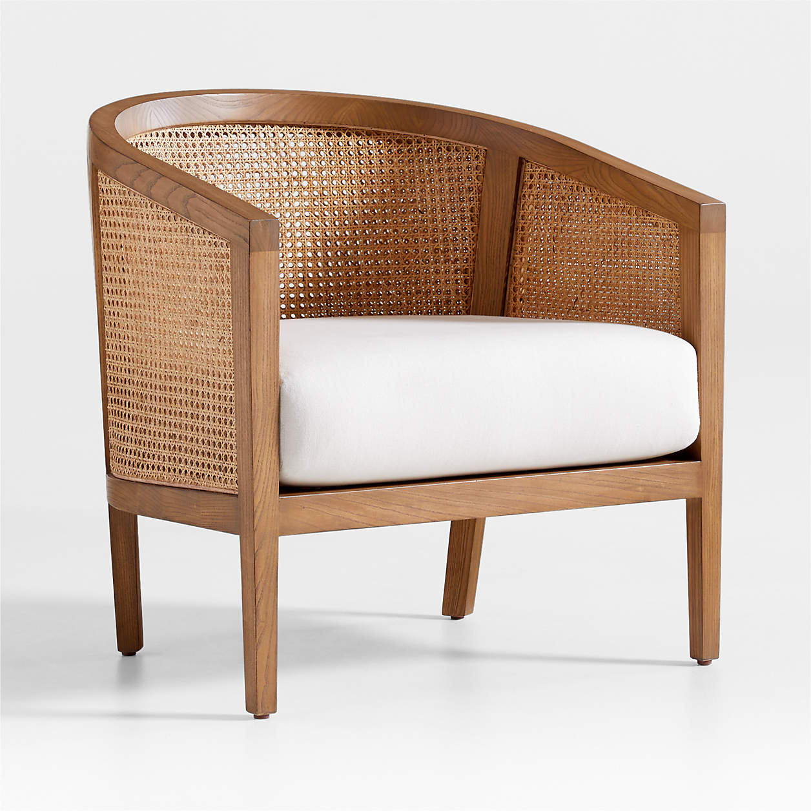

| Image | Title | Description | Price |
|---|---|---|---|
|  VIEW |
Hayes 48" Round Acacia Dining Table | Hayes' open fretwork of angled brass tubing finds its perfect complement in a round tabletop crafted of solid acacia planks | €1,099.00 |
| VIEW | Taj Brown Woven Leather Dining Chair | The mid-century woven chair is having a modern moment in Taj. Supple leather is handcut and woven, wrapping through and around a natural mindi wood frame | €499.00 |
| VIEW | Prairie 80" Media Console | Woven fiber on solid sungkai wood gives our Prairie media console a beachy, breezy feel. Inspired by the respect for craft and materials expressed by 19th-century Arts and Crafts design | €1,799.00 |
| VIEW | Hague Mid-Century Sofa | Mid-century modern details reassemble in our up-to-the-minute Hague sofa. Flared arms, tapered conical legs, nestled cushions and a chamfered back all speak to the style's timeless chic | €1,899.00 |
| VIEW | Ankara Natural Cane Chair with Ivory Cushion | Our best-selling Ankara chair tries on a new look in on-trend cane. In keeping with Ankara's tropical vibe, the chair backs its barrel curves with a breezy weave of natural cane | 799.00 |